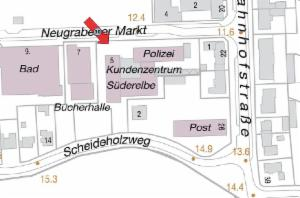
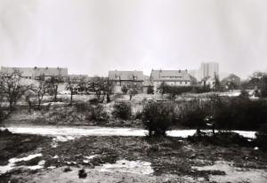
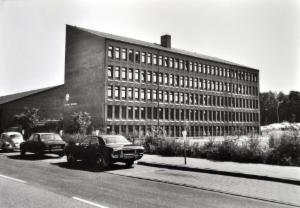
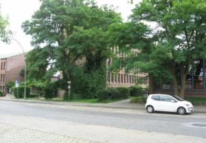

Süderelbe-Archiv
Herzlich willkommen auf unseren Seiten! Wir arbeiten laufend an der Aktualisierung. Für Fragen und Anregungen erreichen Sie uns unter der E-Mail-Adresse "info@suederelbe-archiv.de".
Aktuelles
Nächster Offener Treffpunkt in der Bücherhalle Neugraben am:Sonnabend, 1. Juli 2017, von 10:00 bis 12:00 Uhr
Mitglieder des Süderelbe-Archivs beantworten Fragen und unterstützen Sie bei Ihrer Recherche.Weitere Termine finden Sie hier.
Nächster Stadtteilrundgang:
Sonntag, 16. Juli 2017, 11:00 Uhr - Hitlers Führerstadt Hamburg, das Brückenbaulager am Falkenbergsweg und die Zwangsarbeiter im Zweiten Weltkrieg in Süderelbe - ein Rundgang mit Heiner Schultz über das Gelände des zunächst für die Brückenbauarbeiter geplanten Lagers am Falkenbergsweg. Heiner Schultz wird die Pläne hierzu und die Geschichte dahinter erläutern.
Treffpunkt ist an der HVV-Bushaltestelle (240er Richtung Waldfrieden) Neugrabener Heideweg. Dauer: ca. 1 3/4 Std., ohne Anmeldung. Der Rundgang ist kostenfrei.
Dritter Themenabend 2017:
Donnerstag, 12. Oktober 2017, 19:30 Uhr - Von der Selbstversorgung zum Supermarkt
Ort: Stadtteilsaal im BGZ Süderelbe
Vierter Themenabend 2017:
Donnerstag, 16. November 2017, 19:30 Uhr - Widerstand und Verfolgung in Harburg und Wilhelmsburg. Zeugnisse und Berichte 1933 - 1945 - mit Dr. Christian Gotthardt, Harburg
Ort: Stadtteilsaal im BGZ Süderelbe
Im Februar 2005 erschien die erweiterte Ausgabe des Buchs "die anderen. Widerstand und Verfolgung in Harburg und Wilhelmsburg. Zeugnisse und Berichte 1933 - 1945." Die Autoren hatten damals umfangreiche Archivrecherchen vorgenommen und konnten sicher sein, den Gegenstand im Wesentlichen erfasst zu haben ... aber natürlich sind seitdem wichtige Details neu erforscht und wichtige Verfolgtengruppen komplexer begriffen worden.
An diesem Abend sollen einige bisher unbekannte Fälle beleuchtet sowie ein - auch zahlenmäßiger - Gesamtüberblick gegeben werden.
Näheres zu diesen Abenden finden Sie auch unter ,Termine'.
Der Eintritt ist frei, über Spenden freuen wir uns.
Aufruf
Aktuell im Juni 2017: Glasplattennegative (etwa aus den Jahren 1870 bis 1940) müssen wegen drohenden Verfalls jetzt digitalisiert werden. Haben Sie solche Negative bei sich zu Hause? Kommen Sie zu einem unserer Offenen Treffpunkte und informieren Sie sich.
Wir sammeln und archivieren historische Fotos, Karten, Bücher, Zeitungen und Berichte von Zeitzeugen aus den Ortsteilen Altenwerder, Cranz, Hausbruch, Francop, Neuenfelde, Neugraben-Fischbek und Moorburg des Süderelbegebietes.
Sind Sie selbst oder kennen Sie Zeitzeugen, die für Interviews zur jüngeren deutschen, vor allem der regionalen Geschichte der Süderelberegion zur Verfügung stehen?
Besitzen Sie Dokumente oder Gegenstände - aus eigenem Besitz oder aktuellem Nachlass, die Aufschlüsse zur Geschichte der Süderelberegion geben können?
Dia-Schau in der Bücherhalle Neugraben
In der Archiv-Ecke der Bücherhalle läuft zurzeit die Diaschau „Von Behelfsheimen zur Marktpassage“ mit Ansichten aus dem Neugrabener Zentrum der Jahre 1970, 1977 und 2015 aus 24 Perspektiven an 18 Stand-orten. Die Öffnungszeiten der Bücherhalle finden Sie hier.

Neugraben: Polizeirevier, Ortsamt / Kundenzentrum, Bücherhalle 1970 - 1977 - 2015